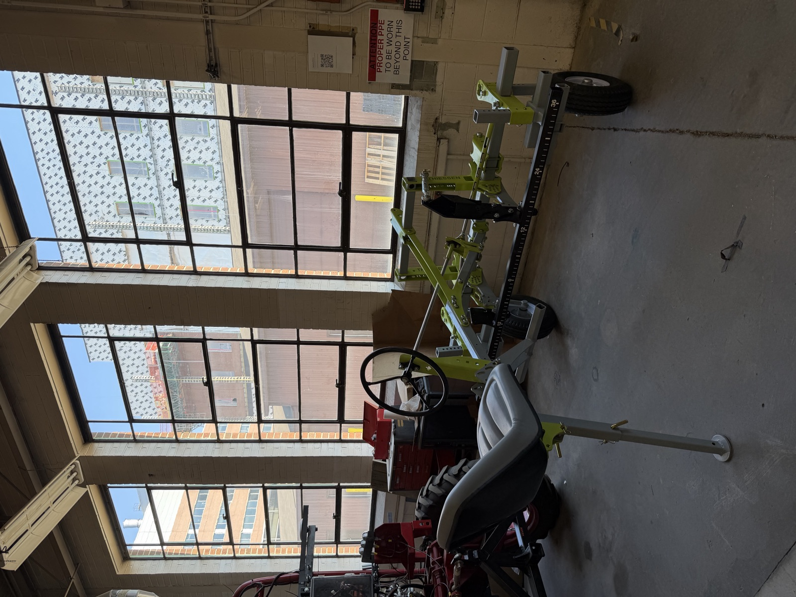

Auto-Steering Cultivator
Autonomous, vision-guided steering retrofit for a Tilmor steerable cultivator

Why
Mechanical weeding requires precise intra-row steering — but existing cultivators depend entirely on operator skill, and a wrong move damages crops. This retrofit brings autonomous, vision-guided steering to a Tilmor steerable cultivator, targeting 1-2cm intra-row accuracy through a distributed CAN-bus control architecture rather than a single monolithic controller.
Which
🔧 Mechanical
⚡ Electrical & Power
💻 Embedded & Control
Wrinkles
A Cantilevered Motor Mount Was a Fatigue Risk
Challenge — Early motor-mount iterations bolted the bracket off to the side on a cantilevered arm, concentrating bending stress and fatigue risk under the pivot's cyclic, reversing loads.
Solution — Converged on a flush U-bolt clamp assembly that bolts the bracket directly against the base plate, removing the cantilever — and the bending/fatigue risk with it.
Drivetrain Slack Ruled Out a Motor-Shaft Angle Sensor
Challenge — Confirmed chain slack in the motor-to-pivot drivetrain meant position feedback taken off the motor shaft would carry that slack straight into the steering error.
Solution — Selected a Piher PST-360G2 hollow-shaft sensor mounted directly on the pivot shaft for true, non-motor-shaft angle feedback.
Open item — The sensor's rotor ships in 14mm or 17mm bores, while the pivot shaft measured 20mm elsewhere on the assembly. Re-verifying the exact diameter at the sensor's mounting point before deciding between a custom-order rotor or a machined step-down.
One Safety Layer Isn't Enough on an Unattended Machine
Challenge — A single point of failure in steering control is unacceptable on a machine operating in a field without an operator's hands on the wheel.
Solution — Finalized a mechanical hard stop: a McMaster two-piece shaft collar (20mm bore, 303 stainless, part #5878T623) clamped to the pivot shaft, with a tab that strikes an adjustable, rubber-bumped stop bolt mounted to the frame — a tunable, shock-absorbing backstop behind the software soft-limit layer.
Wins
In progress. The drivetrain — an Anaheim BDPG-60-110 gearmotor (326:1 planetary, non-back-drivable, so it holds position without power as a built-in fail-safe) paired with a Basicmicro MCP233 CAN driver, and the chain/sprocket transmission from motor to pivot shaft — is modeled and dimensionally sound against calculated torque margins. The dual CANopen/J1939 CAN-bus architecture, Jetson Orin Nano vision pipeline, and PID control loop design are stable and unchanged from earlier design work.
Open items before field-ready:
- Confirm the wheel angle sensor's exact mounting-point shaft diameter
- Bench-test real stall current and verify the driver's overcurrent shutoff trips correctly
- Fabricate the remaining custom brackets
- Finalize chain tensioning and mechanical-stop tuning once hardware is assembled
- Build the scoped ROS2/Gazebo simulation (mirroring the CAN0/CAN1 hardware split) for hardware-in-the-loop-style testing ahead of field deployment